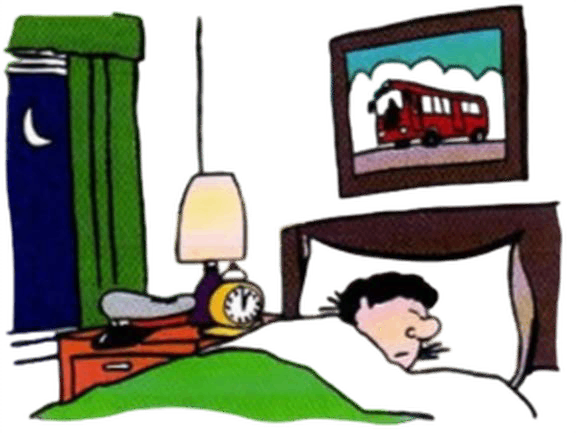

Present simple (I do) Hozirgi noaniq zamon
-
A
Quyidagi misolni o‘rganing:
Aleks avtobus haydovchisi, hozir u o‘z joyida uxlayapti.
Demak: He is not driving a bus. - U avtobus haydamayapti. (chunki u uxlayapti)
lekin He drives a bus. - U avtobus haydaydi. (chunki u avtobus haydovchisi)Drive(s)/work(s)/do(es) - present simple’ning yasalish formasi:
I/we/you/they drive/work/do va hkz he/she/it drives/works/does va hkz -
B
Present simple ish-harakat haqida umumiy gapirilganda qo‘llaniladi. Bunda faqat hozir sodir bo‘layotgan ish-harakat nazarda tutilmaydi. Bu zamon muntazam takrorlanib turadigan yoki doimo sodir bo‘ladigan ishharakatni, hamda umumiy olganda to‘g‘ri (haqiqatga to‘g‘ri keladigan) narsalarni ko‘rsatish uchun qo‘llaniladi:
- The earth goes round the sun. - Yer quyosh atrofida aylanadi. (bu hammaga ma’lum, bu Yerning doimiy harakati)
- I usually go away at weekends. - Hafta oxirida men odatda junab ketaman. (odatdagi harakat)
- Nurses look after patients in hospitals. - Kasalxonalarda bemorlarga hamshiralar qaraydi. (bu haqiqat)
- I work... lekin He works... They teach... lekin My sister teaches...
He/she/it bilan fe’l qo‘llanilganda, “s” esingizdan chiqmasin:
Imlo qoidalarini (-s yoki -es) Ilova 6’dan qarang.
-
C
So‘roq va inkor gaplarni yasash uchun do/does qo‘llaniladi:
do I/we/you/they work? does he/she/it come? I/we/you/they don’t work he/she/it doesn’t come - “Would you like a cigarette?” “No, thanks. I don’t smoke.”- “Sigaret istaysizmi?” “Yo‘q, rahmat. Men chekmayman”
- What does this word mean? - Bu so‘z nimani anglatadi (ma’nosi nima)? (“What means this word?” emas)
- Rice doesn’t grow in cold climates. - Guruch sovuq iqlimda o‘smaydi.
- “What do you do?” “I work in a shop.” - “Nima ish qilasiz?” “Men do‘konda ishlayman”
- He’s so lazy. He doesn’t do anything to help me. - U shunday dangasa. Menga yordam berish uchun hech narsa qilmaydi. (“He doesn’t anything” emas)
Quyidagi misollarda do (qilmoq) asosiy fe’l vazifasida ham xizmat qiladi:
-
C
Present simple ish-harakatning muntazam takrorlanishini ko‘rsatish uchun qo‘llaniladi:
- I get up at 8 o'clock every morning. - Men har kuni ertalab soat 8da turaman. (“I’m getting” emas)
- How often do you go to the dentist? - Tish shifokoriga qanchalik tez-tez borasiz?
- Ann doesn’t drink tea very often. - Anna ko‘p choy ichmaydi.
- In summer John usually plays tennis once or twice a week. - Yozda Jon odatda haftasiga bir- ikki marta tennis o‘ynaydi.
-
D
I promise / I apologise va hkz
apologise/promise/suggest /advise/insist/agree/refuse va shu kabi ish-harakatni bildirmaydigan fe’llar faqat present simple’da qo‘llaniladi:
- I promise I won’t be late. - Kechikmaslikka va’da beraman. (“I’m promising” emas)
- “What do you suggest I do?” “I suggest that you...” - “Nima qilishimga maslahat berasiz?” “Sening ... qilishingga maslahat beraman”.